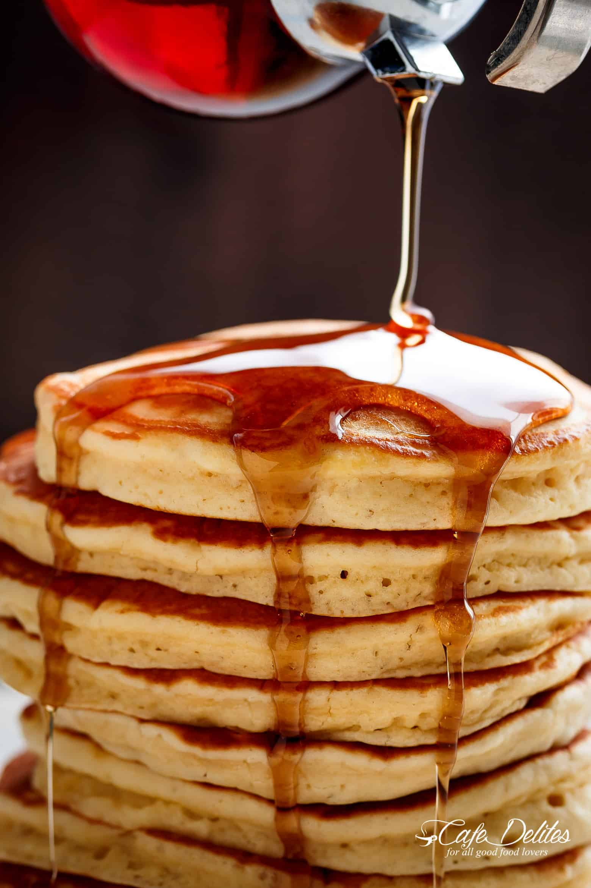

Pancake Recipe

Description
Delicous pancake recipe that kids as well as adults will enjoy.
Ingredients
- cups all purpose | plain flour, (290 g | 10 oz)
- 4 cup granulated sugar or sweetener, (60g | 2 oz)
- teaspoons baking powder
- 1/4 teaspoon baking soda
Steps
- Combine together the flour, sugar (or sweetener), baking powder, baking soda and salt in a large-sized bowl. Make a well in the centre and add the milk, slightly cooled melted butter, vanilla and egg.
- Use a wire whisk to whisk the wet ingredients together first before slowly folding them into the dry ingredients. Mix together until smooth (there may be a couple of lumps but that's okay).
Back to receipe overview